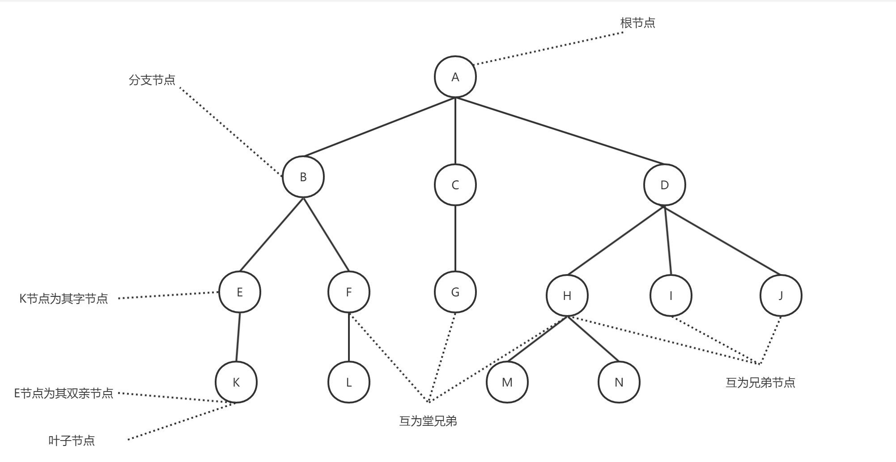
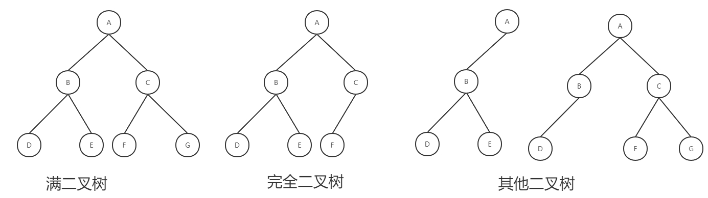
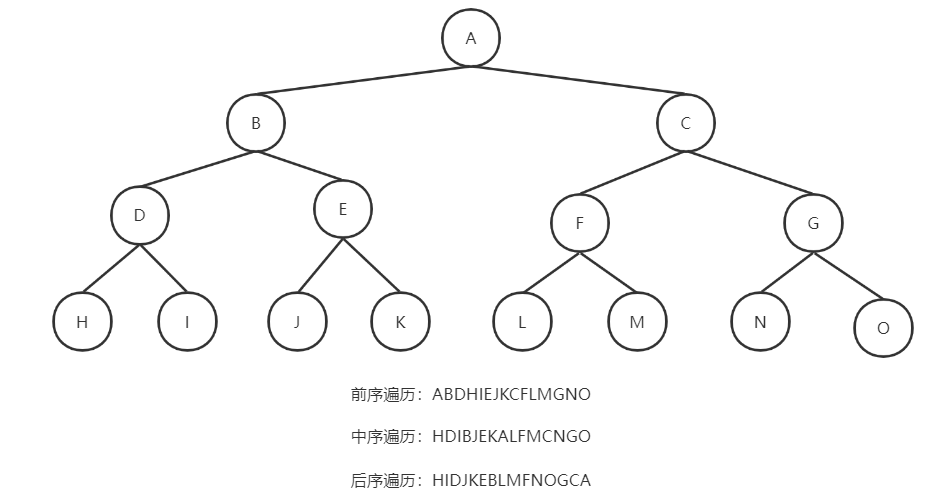
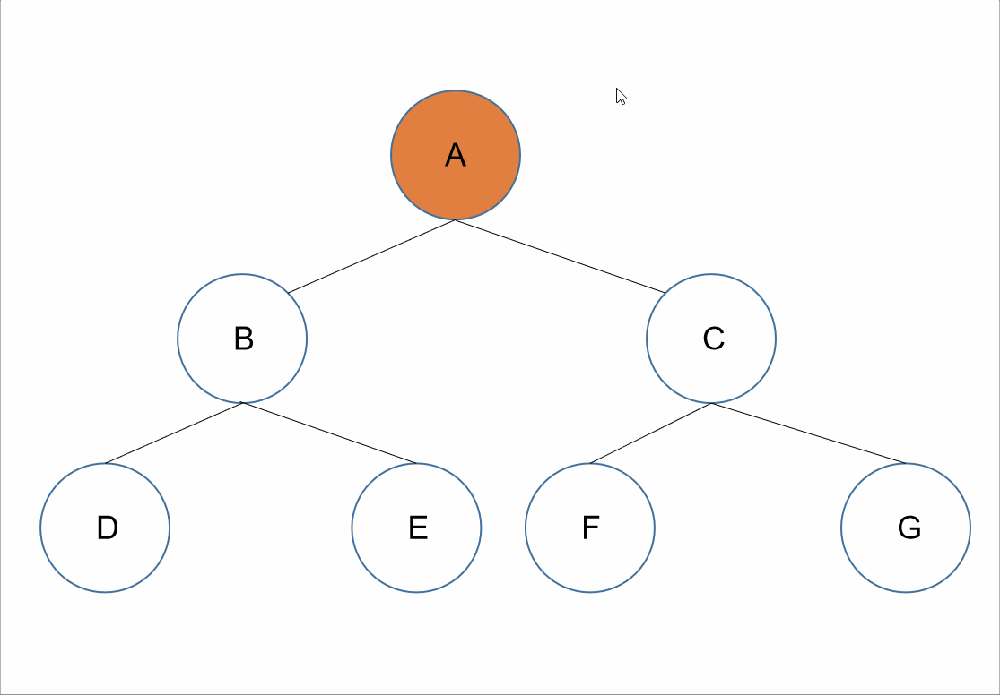
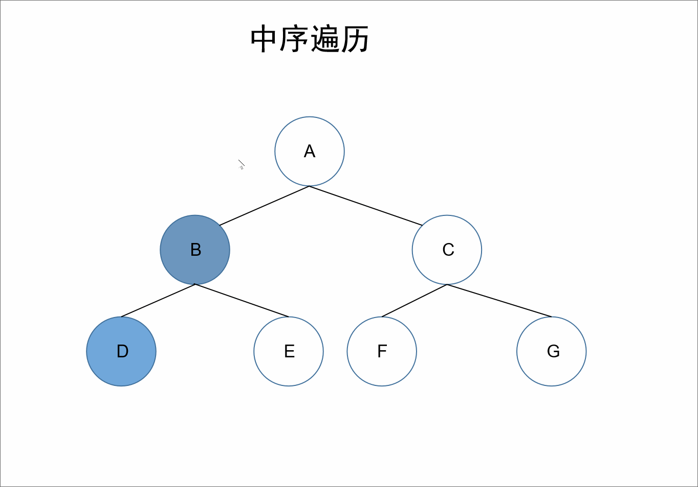
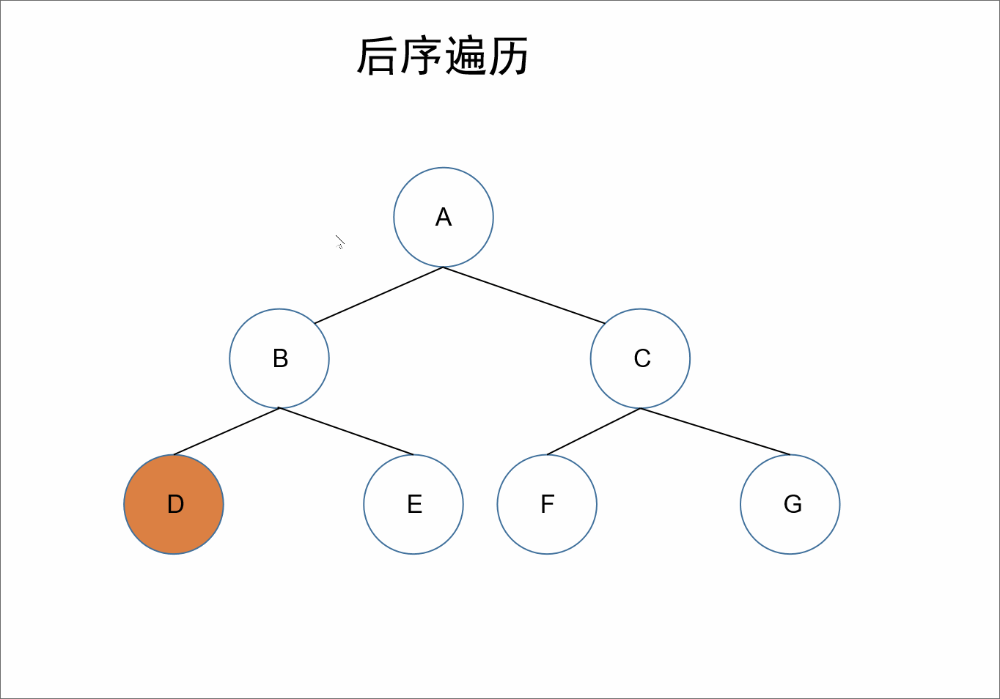
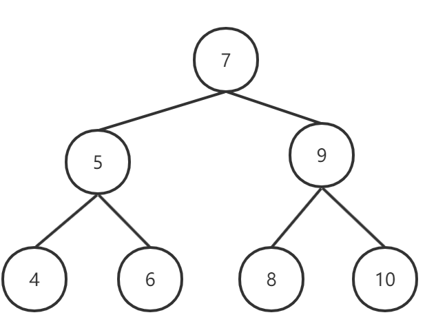
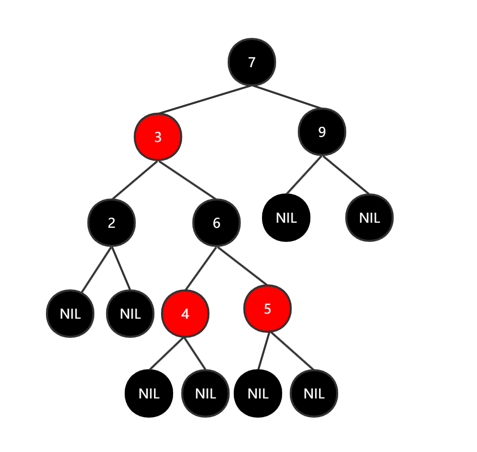
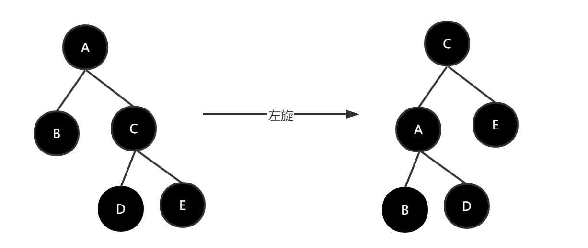
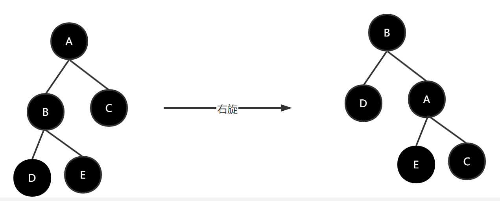

自古逢秋悲寂寥，我言秋日胜春朝
二叉树结构说明
本博客使用树节点结构，如下所示：
class TreeNode(var value: String, var leftNode: TreeNode? = null, var rightNode: TreeNode? = null)定义：树（Tree）是n（n>=0）个节点的有限集合。当n=0时，它为空树，否则为非空树。
对于非空树：
树的基本术语

上述树的概念了解一下即可，主要是二叉树以及红黑树。
二叉树：是每个节点最多有两颗子树的树结构。通常被称作左右子树。
性质：
2^(i-1)个节点。2^k-1个节点。满二叉树：一颗深度为K的二叉树且有2^k-1个节点。
完全二叉树：一棵深度为k的有n个结点的二叉树，对树中的结点按从上至下、从左到右的顺序进行编号，如果编号为i（1≤i≤n）的结点与满二叉树中编号为i的结点在二叉树中的位置相同，则这棵二叉树称为完全二叉树。

对于二叉树来说，常用深度优先搜索进行遍历。其又可以细分为前序遍历、中序遍历以及后序遍历。
对于如下一颗二叉树，其前序、中序、后序遍历结果如下：

下面对上述前序、中序、后序遍历进行详细解析。
动图演示：

遍历顺序为：跟左右。
在整棵树的遍历过程中，先获取其根节点的值，接着为其左节点的值，之后为其右节点的值。
对于上述的树来说，所以我们先获取到根节点的值为A，接下来遍历A的左节点，B节点，所以我们可以获取到B节点的值B；但是对于结点B、D、E来说，节点B是它们的根节点，所以根据跟左右接下需要遍历的是B节点的左节点，D节点，可以获取到值D。如果我们把D节点当作根节点来看的话，因为D节点没有左右节点，我们可以默认D节点的跟左右已经走完了。所以我们回到D节点的父节点B节点。对于B节点来说，此时已经遍历了根左，接下来就是其右节点E节点。我们遍历E节点获取其值E。此时对于A节点来说，其左子树已经遍历完了，根据跟左右，我们遍历器右子树，和前面遍历类似，我们可以获取到值C、F、G。
所以最终前序遍历的结果为：A、B、D、E、C、F、G
代码说明
遍历二叉树之前，我们先构造一个二叉树，后续不同的遍历方式，均调用该函数构造一个上图所示的二叉树。
xxxxxxxxxxobject Helper { /** * 创建二叉树 */ fun createBinaryTree(): TreeNode { return TreeNode( value = "A", leftNode = TreeNode( value = "B", leftNode = TreeNode(value = "D"), rightNode = TreeNode(value = "E") ), rightNode = TreeNode( value = "C", leftNode = TreeNode(value = "F"), rightNode = TreeNode(value = "G") ) ) }}递归写法
xfun binaryTreePreIterator(node: TreeNode?) { if (node != null) { println(node.value) binaryTreePreIterator(node.leftNode) binaryTreePreIterator(node.rightNode) }}//使用binaryTreePreIterator(Helper.createBinaryTree())//结果A B D E C F G前序遍历的递归写法非常简单，根据跟左右的形式，依次进行递归调用即可。
非递归写法
那么如何将上述递归代码改造成非递归的写法呢？
递归很好理解在于，比如此时将父节点的左子树遍历完成之后，可以自己回到父节点遍历的函数处，接着执行遍历其右节点。
所以如果想要改造成非递归函数，则必须有一个数据结构用来记录节点的遍历信息，需要将未遍历完的节点按照执行顺序存起来。这里我们使用栈来进行保存。
xxxxxxxxxxfun binaryTreePreIteratorByStack(node: TreeNode?): ArrayList<String> { val result = ArrayList<String>() val stack = java.util.ArrayDeque<TreeNode>() var currentNode = node; while (currentNode != null || !stack.isEmpty()) { while (currentNode != null) { result.add(currentNode.value) stack.push(currentNode) currentNode = currentNode.leftNode } currentNode = stack.pop().rightNode } return result}//使用binaryTreePreIteratorByStack(Helper.createBinaryTree()).forEach { println(it)}//结果A B D E C F G
遍历顺序为：左根右。
在整棵树的遍历过程中，先遍历其左子树，之后获取自身的值，接着遍历右子树。
对于上述的树来说，A的左节点为B，对于结点B、D、E来说，节点B是它们的根节点，继续根据左根右，我们获取到D节点，接着左根右，D节点的左节点为null，接着遍历其根节点也就是自己，此时我们获取到值D，D的右节点也为null，所以对于B节点来说，其左子树也就遍历完了，接着遍历其自身可以获取到值B，接着遍历右节点E。同理对于A节点来说，其左子树遍历完毕，接着遍历其自身，获取到值A。同理遍历其右子树即可。
所以最终前序遍历的结果为：D、B、E、A、F、C、G
代码说明
递归写法：
xxxxxxxxxxfun binaryTreeMiddleIterator(node: TreeNode?) { if (node != null) { binaryTreeMiddleIterator(node.leftNode) println(node.value) binaryTreeMiddleIterator(node.rightNode) }}//使用binaryTreeMiddleIterator(Helper.createBinaryTree())//结果D B E A F C G类似于前序遍历的写法，根据左根右的形式，依次进行递归调用即可。
非递归写法：
xxxxxxxxxxfun binaryTreeMiddleIteratorByStack(node: TreeNode?): ArrayList<String> { val result = ArrayList<String>() val stack = java.util.ArrayDeque<TreeNode>() var currentNode = node while (currentNode != null || !stack.isEmpty()) { while (currentNode != null) { stack.push(currentNode) currentNode = currentNode.leftNode } val treeNode = stack.pop() result.add(treeNode.value) currentNode = treeNode.rightNode } return result}//使用binaryTreeMiddleIteratorByStack(Helper.createBinaryTree()).forEach { println(it)}//结果D B E A F C G同前序遍历一样，我们使用栈保存调用顺序。之后严格根据左根右执行即可。

遍历顺序为：左右根。
在整棵树的遍历过程中，先遍历其左子树，接着遍历右子树，之后获取自身的值。
对于上述的树来说，A的左节点为B，对于结点B、D、E来说，节点B是它们的根节点，继续根据左根右，我们获取到D节点，接着左根右，D节点的左右节点为null，接着遍历其根节点也就是自己，此时我们获取到值D，所以对于B节点来说，其左子树也就遍历完了，接着遍历其右子树可以获取到E，此时对于B来说其左右子树均遍历完毕，所以我们遍历其自身即获取B。同理对于A节点来说，其左子树遍历完毕，接着遍历其右子树，可以获取到F、G、C，最后遍历自己，获取到A。
所以最终前序遍历的结果为：D、E、B、F、G、C、A
代码说明
递归写法：
xxxxxxxxxxfun binaryTreeAfterIterator(node: TreeNode?) { if (node != null) { binaryTreeAfterIterator(node.leftNode) binaryTreeAfterIterator(node.rightNode) println(node.value) }}//使用binaryTreeAfterIterator(Helper.createBinaryTree())//结果D E B F G C A类似于前面的写法，根据左右根的形式，依次进行递归调用即可。
非递归写法
后序遍历的迭代代码要复杂一点。当达到某个节点时，如果之前还没有遍历过它的右子树就得前往它的右子节点，如果之前已经遍历过它的右子树那么就可以遍历这个节点。所以说，此时要根据它的右子树此前有没有遍历过来确定是否应该遍历当前的节点。如果此前右子树已经遍历过，那么在右子树中最后一个遍历的节点应该是右子树的根节点，也就是当前节点的右子节点。可以记录遍历的前一个节点。如果一个节点存在右子节点并且右子节点正好是前一个被遍历的节点，那么它的右子树已经遍历过，现在是时候遍历当前的节点了。
xxxxxxxxxxfun binaryTreeAfterIteratorByStack(node: TreeNode?): ArrayList<String> { val result = ArrayList<String>() val stack = java.util.ArrayDeque<TreeNode>() var currentNode: TreeNode? = node var preNode: TreeNode? = null while (currentNode != null || !stack.isEmpty()) { while (currentNode != null) { stack.push(currentNode) currentNode = currentNode.leftNode } currentNode = stack.peek() if (currentNode.rightNode != null && currentNode.rightNode != preNode) { //遍历右子树 currentNode = currentNode.rightNode } else { stack.pop() result.add(currentNode.value) preNode = currentNode currentNode = null } } return result}广度优先搜索，根据层级进行遍历。
可以依靠队列进行遍历。
比如对于上图所示的数据结构，广度优先搜索的遍历结果即为：A B C D E F G。
代码如下：
xxxxxxxxxxfun binaryTreeBreadth(node: TreeNode): ArrayList<String> { val result = ArrayList<String>() val arrayDeque1 = java.util.ArrayDeque<TreeNode>() val arrayDeque2 = java.util.ArrayDeque<TreeNode>() arrayDeque1.offer(node) while (!arrayDeque1.isEmpty() || !arrayDeque2.isEmpty()) { while (!arrayDeque1.isEmpty()) { val treeNode = arrayDeque1.poll() if (treeNode != null) { result.add(treeNode.value) val leftNode = treeNode.leftNode if (leftNode != null) { arrayDeque2.offer(leftNode) } val rightNode = treeNode.rightNode if (rightNode != null) { arrayDeque2.offer(rightNode) } } } while (!arrayDeque2.isEmpty()) { val treeNode = arrayDeque2.poll() if (treeNode != null) { result.add(treeNode.value) val leftNode = treeNode.leftNode if (leftNode != null) { arrayDeque1.offer(leftNode) } val rightNode = treeNode.rightNode if (rightNode != null) { arrayDeque1.offer(rightNode) } } } } return result}//使用binaryTreeBreadth(Helper.createBinaryTree()).forEach { println(it)}//结果A B C D E F G二叉搜索树是一种特殊的二叉树，它的左子节点总是小于或等于根节点，而右子节点 总是大于或等于根节点。
如下图，即是一颗二叉搜索树。

对于二叉搜索树来说，中序遍历可以遍历按照节点值递增的顺序遍历二叉搜索树的每个节点。比如上述中序遍历的顺序为节点4、节点5、节点6、节点7、节点8、节点9和节点10。
对于普通的二叉树来说，查找一个值需要遍历整颗二叉树，因此需要O(n)的时间。但是对于二叉搜索树来说，则完全不需要如此麻烦，如果当前节点小于要查找的值，则往其右节点继续查找；如果当前节点大于要查找的值，则往其左节点继续查找。如此重复直到找到即可，那么此时搜索时间复杂度仅仅是二叉树的高度h，即O(h)。一个高度平衡的二叉搜索树的高度近似可以看作为log(n)。
代码：二叉搜索树如何查找一个值。
xxxxxxxxxxfun binarySearchTreeFind(node: TreeNode1, value: Int): TreeNode1? { var currentNode: TreeNode1? = node; while (currentNode != null) { if (currentNode.value == value) { break } if (currentNode.value > value) { currentNode = currentNode.leftNode } else { currentNode = currentNode.rightNode } } return currentNode}//使用binarySearchTreeFind(Helper.createBinarySearchTree(),9).let { println("value is ${it?.value?:"is null"}")}//结果value is 9从上我们知道二叉搜索树是一种很有用的数据结构，如果深度为H，则增删查的时间复杂度均为O(H)。如果二叉搜索树是平衡的，那么其深度近似等于logn。但是在极端情况下，二叉搜索树均只有一个节点，那么其高度则为n-1，此时时间复杂度就变为O(n)。所以二叉搜索树是否平衡很重要。
而java则是根据红黑树这种平衡而二叉搜索树实现了TreeSet和TreeMap这两种数据结构。所以我们有必要了解一下红黑树。
红黑树是一种特殊的二叉查找树，结构如其名，每个结点都要储存位表示结点的颜色，或红或黑。
红黑树需要遵守如下几个特性：
每个节点或红或黑
根节点是黑色
空叶子节点是黑色
如果一个节点是红色，那么其子节点是黑色
从任意一个节点出发到空的叶子节点经过的黑节点个数相同
从3和5又可以推出: 5.1: 如果一个节点存在黑子节点,那么该结点肯定有两个子节点。

只要遵守上述规则就可以了，而对于增加、删除时会破坏红黑树的规则，其中最主要的破坏的是以下两点：
显而易见，如果破坏规则了，我们就是需要按照规则还原即可。
如何还原呢？通过变色、左旋以及右旋，变色即为将节点的颜色由红色变为黑色或者由黑色变为红色。除此之外还需要了解左旋以及优选。
旋转操作仅仅只是用来调节结点的位置的，就是为了满足红黑树的性质5。
以某个结点作为支点(旋转结点),其右子结点变为旋转结点的父节点,右子结点的左子结点变为旋转结点的右子结点,左子结点保持不变。

以某个结点作为支点(旋转结点),其左子结点变为旋转结点的父节点,左子结点的右子结点变为旋转结点的左子结点,右子结点保持不变。

元素添加
操作
当作二叉搜索树一样插入节点，将节点赋为红色，判断如果不符合要求则通过旋转或者着色的方式使之重新成为一颗二叉树。
为什么将新加入的节点赋值为红色呢？
我们现在在分析一下之前的性质，思考插入一个红色节点会违背上述那几个约定呢？很明显1、2、3、5都不会违背，只有4有可能违背。
下面具体分析一下插入的情况
插入的节点为根节点
直接将红色赋值为黑色
父节点为黑色节点
不需要进行任何操作
父节点为红色节点的情况下，叔叔节点为红色节点
父节点为红色节点的情况下，叔叔节点为黑色节点
父亲结点为爷爷结点的左孩子，新插入结点为父节点的左孩子（左左情况）
父亲结点为爷爷结点的右孩子，新插入结点为父亲结点的右孩子（右右情况）
以上两种情况，均进行这样处理：将父亲结点和爷爷结点的颜色互换，然后针对爷爷结点进行一次左旋
插入结点是右结点，父节点是左结点
插入结点是左结点，父亲结点是右结点
以上两种情况，均进行这样处理：针对父结点进行左旋，此时左旋后的情况是左左或者右右的情况，然后按照左左或者右右的的情况处理。
元素删除
操作
将红黑树作为二叉搜索树进行查找，找到后将该节点从树中删除，然后通过着色、旋转等操作使其重新成为一颗红黑树。
删除操作涉及到要删除的节点是否存在子节点，所以可以分为以下三个大的情况：
首先看，要删除的节点没有子节点
删除的节点为红色节点
直接删除即可
删除节点为黑色，其兄弟节点没有儿子。
兄弟节点变红，父亲节点变黑，然后将父亲节点当作当前节点目前的这几种情形处理，直至到根节点。
删除节点为黑色，兄弟节点有一个孩子不空，并且该孩子和兄弟节点在同一边（同为左子树或者同为右子树）：
交换兄弟节点和父亲节点的颜色，并且把父亲节点和兄弟节点的子结点涂成黑色，之后进行如下操作
删除节点是黑色，兄弟节点有一个不空，该孩子和兄弟不在同一边
删除节点为黑色，兄弟节点两个孩子（空节点也算作子节点），且颜色均为黑色
父节点和兄弟节点颜色互换
删除节点为黑色，兄弟节点有两个孩子，且兄弟节点两个孩子为红色。
下面讨论，删除的节点存在一个子节点的情况
删除节点为黑色，儿子节点无论左右位置
将子节点涂为黑色，放到被删除节点的位置
不存在被删除节点为红色节点的情况，因为这种情况不满足性质5
最后讨论，删除的节点存在两个孩子的情况
找到删除节点的右子树中最左的节点，两两交换，然后删除节点的情况就变成了下面的情况之一了，然后进行相关的处理即可。
1.删除节点只有一个儿子的情况
2.删除节点没有儿子的情况
从上面知道红黑树的增删查时间复杂度均为O(H)。
那么其高度H近似等于多少呢？这里列出证明
首先结论是：h≤2log2(n+1)。
证明：
我们规定，从任意节点出发，到其子树的子叶节点的路径中黑色节点的数量称为该节点的黑高，即为bh。
设：根节点为T，则根节点的黑高则为bh(T)。
根据红黑树的性质，可知红色节点不可以相邻，但是没有规定黑色节点不可以相邻，所以可以假设极端情况下一颗红黑树均为黑色节点。那么此时我们可以得出，这样一棵树的节点数n和树高的关系为n=2^bh(T)-1。
但是对于红黑树而言会包含红色节点，所以一定有n≥2^bh(T)-1（1）。
另外根据红黑树的性质，黑高至少为树高的二分之一，即bh(T)≥h/2（2）。
则根据（1）式和（2）式可得n≥2^bh(T)-1≥2^(h/2)-1即n≥2^(h/2)-1。
然后我们推导一下：
2^(h/2)≤n+1log2^(n+1)≥h/2h≤2log2(n+1)所以最终可得：h≤2log2(n+1)。
Java根据红黑树这种平衡的二叉搜索树实现
TreeSet和TreeMap结构。
TreeSet常用的函数：
| 序号 | 函数 | 函数功能 |
|---|---|---|
| 1 | ceiling | 返回大于或等于给定值的最小值，没有返回null |
| 2 | floor | 返回小于或等于给定值的最大值，没有返回null |
| 3 | higher | 返回大于给定值的最小值，没有返回null |
| 4 | lower | 返回小于给定值的最大值，没有返回null |
TreeMap常用的函数：
| 序号 | 函数 | 函数功能 |
|---|---|---|
| 1 | ceilingEntry/ceilingKey | 返回大于或等于给定值的最小映射/值，没有返回null |
| 2 | floorEntry/floorKey | 返回小于或等于给定值的最大映射/值，没有返回null |
| 3 | higherEntry/higherKey | 返回大于给定值的最小映射/值，没有返回null |
| 4 | lowerEntry/lowerKey | 返回小于给定值的最大映射/值，没有返回null |
接下来写一个例子，利用TreeMap实现日程表的功能：
请实现一个类型MyCalendar用来记录自己的日程安排，该类型用方法book（int start，int end）在日程表中添加一个时间区域为[start，end）的事项（这是一个半开半闭区间）。如果[start，end）中之前没有安排其他事项，则成功添加该事项并返回true；否则，不能添加该事项，并返回false。
比如：下面的3次调用book方法中，第2次调用返回false，这是因为时间[15，20）已经被第1次调用预留了。由于第1次占用的时间是一个半开半闭区间，并没有真正占用时间20，因此不影响第3次调用预留时间区间[20，30）。
xxxxxxxxxx val calendar = MyCalendar() println(calendar.book(10, 20)) println(calendar.book(15, 25)) println(calendar.book(20, 30)) //结果 true false true如果待添加的事项占用的时间区间是[m，n），就需要找出开始时间小于m的所有事项中开始最晚的一个，以及开始时间大于m的所有事项中开始最早的一个。如果待添加的事项和这两个事项都没有重叠，那么该事项可以添加在日程表中。
xxxxxxxxxxclass MyCalendar { /** * key : start * value : end */ private val events = TreeMap<Int, Int>() fun book(start: Int, end: Int): Boolean { val event = events.floorEntry(start) if (event != null && event.value > start) { return false } val event2 = events.ceilingEntry(start) if (event2 != null && event2.key < end) { return false } //存入 events[start] = end return true }}